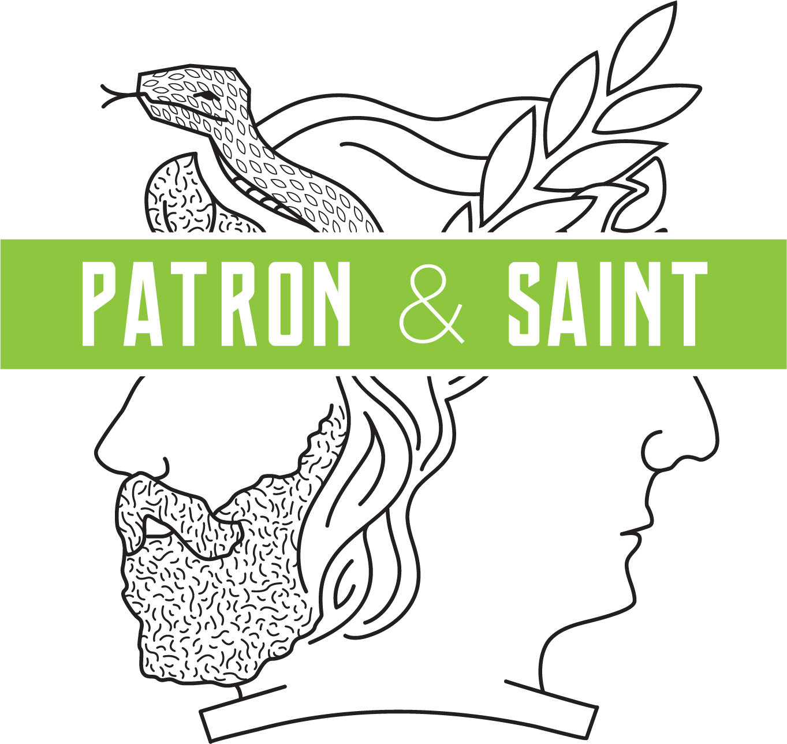

The Non-Billable Project.
Everything here was made for nobody. No brief, no approval, no invoice. Which is exactly why it's the most honest section of the site.
A running list, no fixed number, added to whenever something snags. Half of it is about brands. Half of it is about my kids, or a parking lot, or a badly worded sign. I've never been sure the two categories are different.
Every brand that says it's "passionate about" something is telling you it couldn't find a real differentiator.
Jul 26The best line in a hundred pages of research was a statistic nobody had bothered to write down as a sentence.
Jul 26My daughter described a song as "loud on purpose." Best creative brief I've read all year.
Jun 26Nobody has ever been persuaded by the word "innovative." Not once, in the entire history of commerce.
Jun 26The hardest edit is cutting the line you're proudest of because the paragraph doesn't need it.
Jun 26A tagline written by consensus is just the least objectionable sentence in the room.
May 26Poetry taught me more about positioning than any strategy deck. Both are the practice of finding the one word that can't be swapped.
May 26When a client says "make it pop," they almost always mean "I don't believe the idea yet."
May 26Written as examples of the form and the register. Jeff writes the real ones — target 25 at launch so the section looks alive on day one, which is about an afternoon's work. After that it's a phone-sized habit: two sentences, no headline, no editing pass. TK
The LinkedIn mechanic: post here first, then to LinkedIn with a link back. The site is the archive and the canonical source; LinkedIn is distribution. Every post drives traffic to a page that sells him.
Never heard of it? That's because it doesn't exist.
But it probably should have. A patron for the work nobody commissioned — the poem, the record, the thing made on a Tuesday night because it wouldn't leave you alone.
Every artist gets told to find an audience. Almost nobody gets told where to find a patron — someone who backs the work before it's proven, for no reason except that it should exist. That role used to have a name. Now it mostly doesn't.

Two profiles facing away from each other, because it's one job with two names — the patron who pays for it and the saint who looks after it. A snake and a laurel above them, which is about right: the laurel is what you crown a poet with, and the snake is everything that talks you out of writing.
Engraved line art, a green nobody uses for anything serious, and a banner that says the name like it's already an institution. It isn't. That's the joke, and the joke is load-bearing.
Buy the shirt → Link — TK
Now that the mark's here, this stops being a proposal and becomes a piece of work — so it should be treated like one. What else exists? Applications, secondary marks, the shirt artwork, anything written in the brand's voice. Whatever there is, we show it; three or four pieces would make this the strongest page on the site.
The copy above is still mine and still a guess at your intent — the patron-of-the-arts reading came from MC. Rewrite it in your voice. You know what it's for; I'm reverse-engineering it from a logo and one line of your brief.
On the green: it's #8EC63F, and it's deliberately not the site's vermilion. Patron & Saint gets to be its own brand inside this page — which is also a quiet demonstration that you can hold two identities apart without either one wobbling.
Occasionally something needs more than two sentences. There's no schedule and there never will be — two good ones beat twelve obligatory ones.
Carried over from the old blog — worth keeping if he still stands behind it.
Essay 02On a site arguing that value is the art of noticing, this is the most credible evidence available — and no other brand strategist can put it on the page.
WorkThe two 2015 posts get archived, not shown. No visible dates on the index, so the archive doesn't advertise its own age.